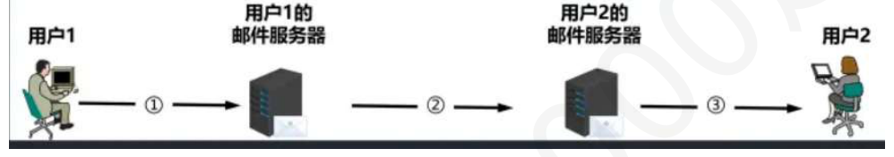
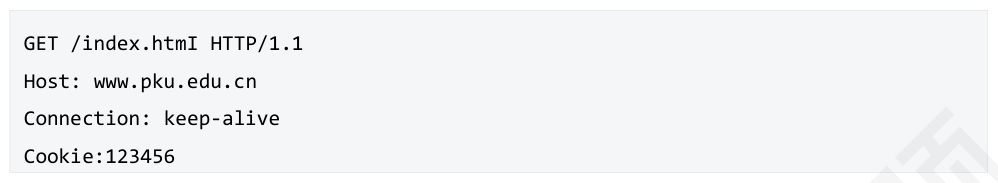
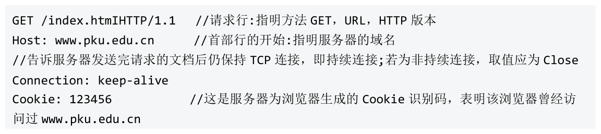

第 31 题
下列关于电子邮件系统的说法中，正确的是（ ）。
- A．如果发送方和接收方邮件服务器距离过远，则需要与一个中间的邮件服务器建立连接作为中转。
- B．当接收方邮件服务器故障时，发送方邮件服务器会立即丢弃该邮件，并向发送方返回错误报告。
- C．用户代理是用户与电子邮件系统的接口，通常是运行在用户电脑中的一个程序。
- D．邮件服务器之间交换邮件时，既可以使用SMTP 协议，又可以使用POP3 协议。
答案与解析
答案：C
电子邮件系统中，发送方邮件服务器通过DNS 查询到接收方邮件服务器的IP 地址后，直接与其建立TCP 连接发送邮件，无论物理距离多远，不需要中间服务器中转，故A 错误。当接收方邮件服务器故障时，发送方邮件服务器会先将邮件存入待发队列，在一段时间内（如24 小时）多次尝试重发，若最终仍失败，才会向发送方返回错误报告，并丢弃邮件，故B 错误。用户代理是用户用来撰写、发送、接收和管理邮件的软件，是用户与邮件系统的接口，故C 正确。邮件服务器之间交换和投递邮件时，统一使用SMTP 协议；POP3 协议仅用于用户代理从邮件服务器上拉取（下载）邮件，故D 错误。
第 32 题
SMTP 协议和POP3 协议默认使用的熟知端口号分别是？
- A．21, 110
- B．25, 110
- C．25, 80
- D．80, 25
答案与解析
答案：B
SMTP 和POP3 协议均使用TCP 进行封装，端口号分别为25 和110。
第 33 题
下列关于MIME 协议的说法中，正确的是（ ）。
- A．MIME 是一种在邮件服务器之间传输邮件的协议，用于取代SMTP。
- B．MIME 通过其内置的压缩算法，可以有效减小邮件附件的大小。
- C．MIME 扩展了电子邮件的功能，使其能够支持多种数据类型和非ASCII 字符。
- D．MIME 仅适用于SMTP 协议，而对后来出现的HTTP 协议无效。
答案与解析
答案：C
MIME不是一个传输协议，而是对电子邮件格式的扩展规范，它没有取代SMTP，而是与SMTP 协同工作，故A 错误。MIME 本身不提供压缩功能。它解决的是如何将二进制数据（如图片、视频）或非ASCII码文本嵌入到原本只支持7 位ASCII码的邮件正文中，故B错误。 MIME 不仅适用于SMTP 协议，也适用于HTTP 协议，故D 错误。
第 34 题
与POP3 协议相比，IMAP 协议为用户提供的最主要的新功能是（ ）。
- A．允许用户将邮件从服务器下载到本地。
- B．支持用户在邮件服务器上直接管理邮件。
- C．能够传输非ASCII 码格式的邮件内容。
- D．保证邮件在传输过程中的绝对安全。
答案与解析
答案：B
POP3 协议和IMAP 协议均支持用户将邮件从服务器下载至本地，但POP3 协议仅允许用户以下载并删除方式或下载并保留方式从邮件服务器下载邮件到用户方计算机，不允许用户在邮件服务器上管理自己的邮件（例如创建文件，对邮件进行分类管理等），IMAP 协议允许用户在邮件服务器上直接管理邮件。传输非ASCII 码内容是由MIME 协议实现的。POP3 协议和IMAP 协议均不提供加密功能，因此无法保证邮件在传输过程中的绝对安全。
第 35 题
用户1 与用户2 通过浏览器发送和接收电子邮件的过程如下图所示，则图中①、②、③阶段分别使用的应用层协议是（）。

- A．SMTP、SMTP、SMTP
- B．SMTP、SMTP、POP3
- C．HTTP、HTTP、HTTP
- D．HTTP、SMTP、HTTP
答案与解析
答案：D
阶段①和③中，用户通过浏览器与Web 邮件服务器交互（发送和读取邮件），此过程遵循HTTP 协议。阶段②是邮件在两个邮件服务器之间的传递，必须使用SMTP 协议。因此，三个阶段使用的协议分别为HTTP、SMTP、HTTP。故D 正确。
第 36 题
假设用户在浏览器中输入http://www.example.com/index.html 并按下回车，且主机DNS 缓存中包含www.example.com 对应条目。在成功显示index.html 主页的过程中，主机的协议栈在应用层、运输层和网络层从上到下依次使用了下列哪组协议？
- A．HTTP，TCP，IP
- B．HTTP，UDP，BGP
- C．DNS，TCP，IP
- D．DNS，UDP，BGP
答案与解析
答案：A
DNS 缓存命中，主机无需通过网络发送DNS 查询报文。为了获取页面，浏览器直接发起HTTP 请求。HTTP 基于可靠的TCP 协议，而TCP 报文段又被封装在IP 数据报中。因此，实际发生网络通信的协议栈依次是HTTP、TCP、IP。
第 37 题
用户在一个网站上填写了一份问卷，并点击“提交”按钮。在这种场景下，浏览器最适合使用下列哪个HTTP 方法来发送该问卷内容？
- A．GET
- B．POST
- C．HEAD
- D．PUT
答案与解析
答案：B
GET 主要用于请求URL 标志的文档；POST 用于向服务器发送数据；HEAD 用于请求URL 标志的文档的首部；PUT 用于在指明的URL 下存储一个文档。
第 38 题
对于一个URL http://www.ky.com:8080/dir/index.html，下列说法中错误的是（ ）。
- A．http 是该URL 使用的协议。
- B．www.ky.com 是提供服务的主机域名。
- C．使用了默认端口号8080。
- D．/dir/index.html 是主机上资源的路径。
答案与解析
答案：C
HTTP协议的默认端口号是80，当URL中像本题一样明确指定了端口号8080时，浏览器将连接到这个指定的端口。只有在URL 中省略端口号时，才会使用默认端口80。因此，C错误。
第 39 题
某用户首次访问网上商城www.shop.com，并将一件商品加入购物车。当该用户关闭浏览器稍后重新打开，并再次访问该商城时，发现购物车中的商品依然存在。在此过程中，下列说法中正确的是？
- A．第一次访问，服务器响应包含Cookie 头；第二次访问，浏览器请求包含Set-Cookie 头。
- B．第一次访问，浏览器请求包含Set-Cookie 头；第二次访问，服务器响应包含Cookie 头。
- C．第一次访问，服务器响应包含Set-Cookie 头；第二次访问，浏览器请求包含Cookie 头。
- D．第一次访问，浏览器请求包含Cookie 头；第二次访问，服务器响应包含Set-Cookie 头。
答案与解析
答案：C
Cookie 的工作机制是：第一次访问时，由于客户端没有该站点的Cookie，服务器为了识别该用户，会在其HTTP 响应报文中包含一个Set-Cookie 首部字段，其中携带一个唯一的识别码。浏览器收到后会将此Cookie保存。第二次（及以后）访问该站点时，浏览器会自动在其发出的HTTP 请求报文中包含一个Cookie 首部字段，并将之前保存的识别码发送给服务器。服务器通过读取这个Cookie 来识别用户，从而恢复其会话状态，故选择C。
第 40 题
下列关于Cookie 的说法中，错误的是（ ）。
- A．Cookie 可以将无状态的HTTP 状态化。
- B．完整的会话信息通常存储在服务器端，用户主机仅存储Cookie 识别码。
- C．Cookie 和Web 缓存都需要在客户端存储特定信息，以减少后续请求的响应时延。
- D．第三方Cookie 常被广告网络用于跨站点跟踪用户行为，容易泄露用户隐私。
答案与解析
答案：C
Cookie 和Web 缓存都在客户端存储信息，但其主要目的不同。Web 缓存的主要目的是存储资源副本，以避免重复网络传输，从而减少响应时延。而Cookie 则存储Cookie 识别码，它在每次请求时都会被发送给服务器，反而轻微增加了网络开销，而不是为了减少时延。
第 41 题
某浏览器发出的HTTP 请求报文如下下列叙述中，错误的有（）。 I．index.html 存放在www.pku.edu.cn 主机上II．该浏览器请求浏览index.htmlIII．该浏览器是首次浏览www.pku.edu.cnIV．该浏览器请求使用非持续连接

- A．I、II
- B．III、IV
- C．I、IV
- D．II、III
答案与解析
答案：B

第 42 题
主机H 通过HTTP/1.0 协议请求浏览某Web 服务器S 上的Web 页index.html，该页面引用了1个同目录下的图像文件。假设index.html 文件大小为1MSS，图像文件大小为3MSS。H 与S 之间的往返时间RTT 为20ms，TCP 段的传输时延和HTTP 头部开销忽略不计。若浏览器在完全接收index.html后，才能发起对图像文件的请求，则从H 请求与S 建立第一个TCP 连接的时刻起，到接收到全部内容为止，所需的时间至少是（）。
- A．100ms
- B．120ms
- C．140ms
- D．160ms
答案与解析
答案：A
本题考察HTTP/1.0 非持续连接下的时间计算，需要考虑TCP 连接建立和慢启动过程。首先获取HTML 文件（1MSS），需要使用非持续连接，需要建立一个新的TCP 连接： • 1 RTT：TCP 三次握手的前两次（SYN, SYN+ACK）。 •1 RTT：TCP 握手的第三次（ACK，可捎带HTTP 请求）及服务器响应（返回1MSS 的HTML文件）。获取HTML 耗时=2RTT=40ms。然后获取图像文件（3MSS）：浏览器解析完HTML 后，为图像文件建立另一个新的TCP 连接。 •1 RTT：建立新的TCP 连接。。 • 1 RTT：发送图像请求，服务器收到后开始用慢启动发送数据，发送第1 个MSS。 •1 RTT：客户端收到第1 个MSS 并发送确认，服务器收到确认后拥塞窗口增至2，发送剩下的2 个MSS。 • 获取图像共耗时=3RTT=60ms。总耗时=获取HTML 耗时+获取图像耗时= 100ms。
第 43 题
若浏览器支持并行TCP 连接，使用非持久的HTTP/1.0 协议请求浏览1 个Web 页，该页中引用同一个网站上7 个小图像文件，则从浏览器传输Web 页请求建立TCP 连接开始，到接收完所有内容为止，所需要的往返时间RTT 数至少是（ ）。
- A．4
- B．9
- C．14
- D．16
答案与解析
答案：A
首先，浏览器必须先获取主Web 页面，才能知道其中引用了哪些图像。获取一个对象在非持续连接下需要2RTT（1RTT 建立连接，1RTT 请求与响应）。浏览器接收并解析完Web 页后，发现了7 个图像的引用。由于浏览器支持并行TCP 连接，它可以同时对这7 个图像发起TCP 连接和HTTP 请求。因为这7 个请求是并行处理的，获取它们总共所需的时间取决于其中最慢的一个。而获取每个图像都需要2RTT。因此，并行获取这7个图像总共耗时也是2RTT。整个过程是串行的两步 （先获取主页，再并行获取图片），所以总耗时=获取Web 页耗时+并行获取所有图像耗时=4 RTT。
第 44 题
主机H 通过HTTP/1.1 请求服务器S 上的一个Web 页。该Web 页包含一个1MSS 的HTML 文件和1 个图像文件。已知H 到S 的RTT 为15ms，连接采用持续的非流水线方式。若从H 发起TCP 连接的时刻起，到H 接收完所有内容为止，总共耗时90ms，忽略传输时延。则该图像文件的最大尺寸是多少MSS？
- A．4
- B．5
- C．30
- D．31
答案与解析
答案：C
总耗时为90ms，RTT 为15ms，因此总过程消耗了90ms/15ms = 6 个RTT。TCP连接建立需要1 个RTT。之后，客户端发送对HTML 文件的请求并接收完该1MSS 的文件，这又需要1 个RTT。此过程共消耗2 个RTT（30ms）。在服务器发送完1MSS 的HTML 并收到确认后，其拥塞窗口cwnd 从1MSS 增长为2MSS。剩余4 个RTT 全部用于请求和下载图像文件。服务器在开始发送图像文件时，其cwnd已经为2MSS。第3个RTT，服务器可发送2 MSS的图像数据。第4个RTT， cwnd 翻倍至4MSS，服务器可发送4MSS。第5 个RTT，cwnd 翻倍至8MSS，服务器可发送8MSS。第6 个RTT，cwnd 翻倍至16MSS，服务器可发送16MSS。在专门用于下载图像的4 个RTT 内，服务器最多可发送的总数据量为30MSS。因此该图像文件的最大尺寸是30MSS，故C 正确。
第 45 题
主机H 通过HTTP/1.1 与服务器S 通信，请求一个大小为6MSS 的图像文件。H 与S 之间的RTT 恒为10ms，TCP 连接已建立，且TCP 的拥塞窗口cwnd 初始值为1MSS，慢开始门限为8MSS。假设S 收到H 的请求后立即开始发送数据，忽略HTTP 报文开销和TCP 段的传输时延。从H 发送针对该图像的HTTP 请求报文的时刻算起，到S 发完最后一个数据段为止，S 至少需要经过多长时间？
- A．30ms
- B．35ms
- C．40ms
- D．45ms
答案与解析
答案：A
时间从H 发送HTTP 请求开始计算，整个过程可按RTT 划分：第1 个RTT：H 发送的HTTP 请求报文到达服务器S，S 收到后立即开始发送数据。此时拥塞 • 窗口cwnd=1MSS，S 发送1 个MSS。 •第2 个RTT：S 收到对第1 个MSS 的确认后，cwnd 翻倍至2MSS，S 继续发送2 个MSS。此时累计已发送1+2=3 个MSS。 • 第3个RTT：S收到对前2个MSS的确认后，cwnd翻倍至4MSS（仍小于慢开始门限8MSS）。S 发送剩余的6-3=3 个MSS。在第3 个RTT 内，所有数据都已发送完毕。因此，从H发送请求开始，到S发完最后一个数据段，整个过程至少需要3个RTT的时间，即3* 10ms = 30ms，故A 正确。
第 46 题
一个Web 页面引用了3 个位于同一服务器上的小图片。分别使用以下四种方式下载该页面和所有图片，不考虑传输延迟，仅考虑RTT，哪种方式的总耗时最短？
- A．HTTP/1.0，非持续连接，不支持TCP 并行连接。
- B．HTTP/1.0，非持续连接，支持TCP 并行连接。
- C．HTTP/1.1，持续连接，非流水线方式。
- D．HTTP/1.1，持续连接，流水线方式。
答案与解析
答案：D
AD 选项非持续连接，不支持TCP 并行连接，每一个对象都需要1 RTT 建连+ 1RTT 请求响应，且必须串行。总耗时= 4 * (1+1) = 8 RTT。B 选项非持续连接，不支持TCP 并行连接，所有对象可以同时请求。总时间取决于单个任务的耗时，即1 RTT 建连+ 1 RTT 请求响应。总耗时= 2RTT（建连+传html）+2RTT（建连+传图片）=4RTT。C 选项持续连接但非流水线，只需1 次TCP 建连，但请求必须串行。总耗时= 1 RTT(建连) + 4 * 1 RTT(请求4 个对象) = 5 RTT。D 选项持续连接且流水线，只需1 次TCP 建连，且所有请求可以一次性连续发出，服务器也可以连续发回响应。总耗时= 1 RTT(建连) +1RTT（传html）+ 1 RTT(所有图片请求发出并接收完所有响应)=3RTT。故D 选项耗时最短。
第 47 题
假设接收缓存足够大，一开始慢开始门限值为4mss，http 一个页面1mss，然后页面下有2 个图片引用，第一个图片3mss，第二个5mss，非流水线方式下，从发送web 请求到收到所有数据至少 ）个rtt。 （
- A．5
- B．6
- C．4
- D．7
答案与解析
答案：A
首先是TCP 三次握手建立连接，题目问的是web 请求开始，即第三次握手携带HTTP 的请求报文开始。慢开始阶段，每收到1 个mss 确认，拥塞窗口cwnd 值+1。 • 页面1mss，在第一个RTT 即可完成，此时拥塞窗口cwnd 变为2mss。 •第一个图片引用3mss>2mss，第二个RTT 结束后，发送该图片的前2mss，拥塞窗口值cwnd 变为4mss。此时进入拥塞避免阶段，在此阶段，每收到1 个mss 确认，拥塞窗口值+1/cwnd，第三个RTT 结束，cwnd 值为4.25，并不是5。 •因此至少还需两个RTT 才能完成最后一个图片（4.25+0.75=5mss）的传送。一共5 个RTT。下图为谢书关于慢开始和拥塞避免算法原理的解释：